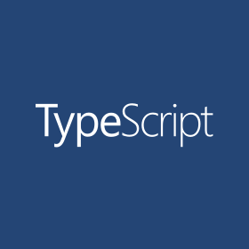

Welcome toNext.js!
Get started by editingpages/index.tsx
Documentation →
Find in-depth information about Next.js features and API.
Learn →
Learn about Next.js in an interactive course with quizzes!
Examples →
Discover and deploy boilerplate example Next.js projects.
Deploy →
Instantly deploy your Next.js site to a public URL with Vercel.
Upstream projects

Next.js
The React Framework for Production.

React Bootstrap
The most popular front-end framework Rebuilt for React.

TypeScript
TypeScript is JavaScript with syntax for types.